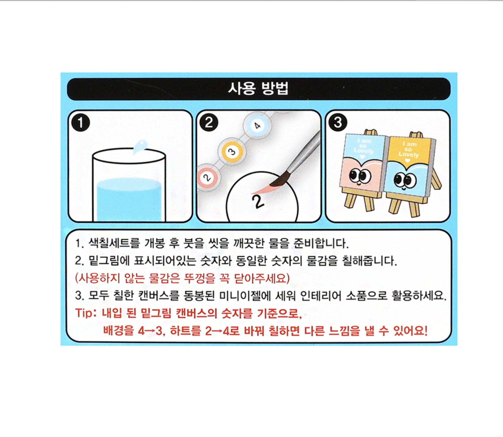
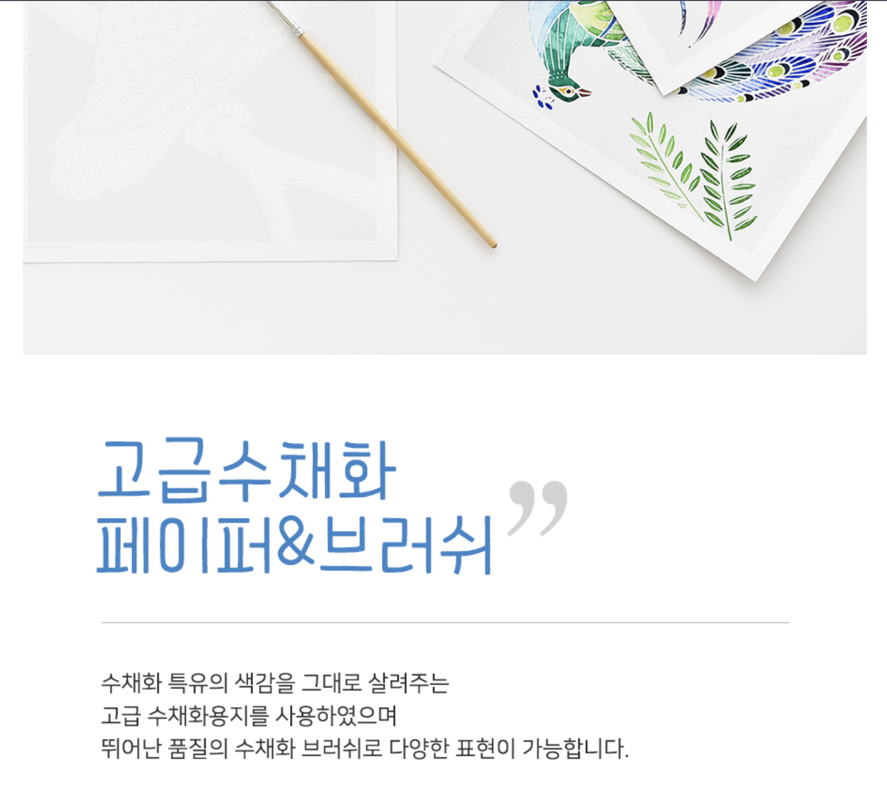
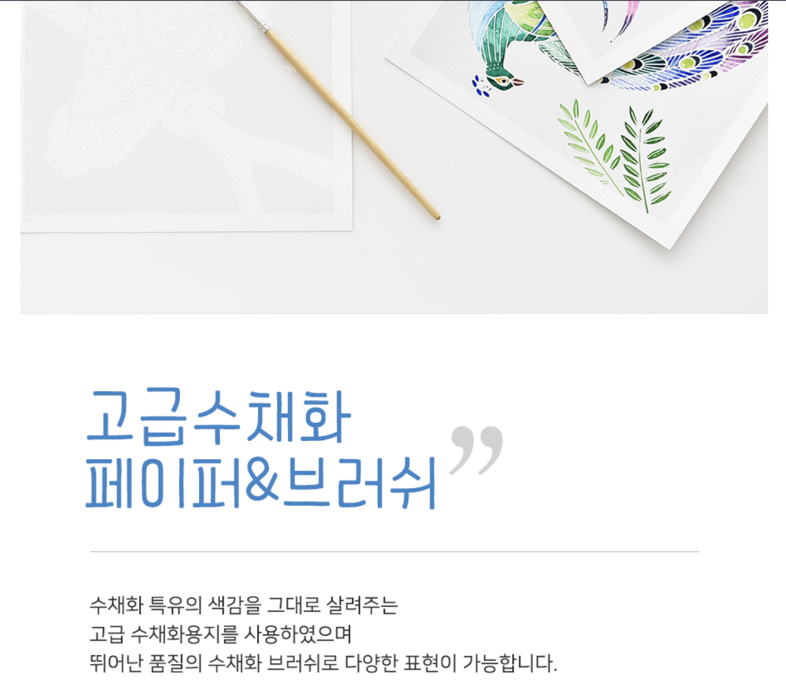

물감으로 그리는 나만의 그림 액자
만원의 행복
키트 구성물품
수채화 물감, 수채화 붓, 간단한 스케치 도안(3장)(자체제작),먹지, 별도의 수채화지, 액자, 사용설명서(자체제작)
상세
수채화 물감: 스테들러 노리스클럽 고체물감 12색 5500원
스케치 3종(자체제작)
사용설명서(자체제작)
수채화지: 캔손 엽서 패드 시리즈 10.5*15.5 몽발 300g 2000원
먹지: 1000원

액자: 이케아 10*15 1500원
총액: 10000원
유사제품
컬러링북, 컬러링 엽서, 물감이 포함된 컬러링 키트
차별점 및 구매포인트
컬러링 북과는 다르게 먹지를 사용해 스케치를 따라그림으로써 스케치부터 본인이 한 것 같은 느낌을 줄 수 있다.
추가 수채화지를 제공해 본인의 그림을 그릴 수 있도록 구성되어있다.
가격면에서 이득을 볼 수 있다.
실제 수채화지를 이용해 수채화 컬러링북보다 더 수월하게 채색을 할 수있다.
자신이 그린 자신만의 액자를 만든다는 것이 큰 메리트로 다가 올 것이다.
유사제품 제품소개 방법
<경우1>
키트의 구성품을 보여주고 그 아래에 구성품을 하나씩 소개하는 경우.
전체 구성품 샷-구성품 세부 소개 및 이미지-사용방법-제품크기/인포 형식으로 진행된다.
<경우2>
사은품 형식으로 물감이 추가 된다면 컬러링 북 소개 이후 물감 정보가 덧붙혀 나온다.
참고사례
 

제품(브랜드)스토리를 서두에 두면서 소개 시작
제품의 장점을 크게 세가지로 나누어 크게 놓은 후 자세한 설명을 한다.
이후 제품 구성-사용방법-키트종류를 나열해 보여줌
sns이벤트을 열어 구매욕구를 일으킴.(브랜드있는 제품이기 때문에 가능한것 같다)
제작 기획안
1. 키트의 이름을 정한후 이미지와 함께 키트 소개
<참고>
2. 키트의 세부적인 요소 소개와 함께 장점부각
<참고>
2-1. 실제 사용이미지를 함께 보여준다.
<참고>
3. 수채화의 구성물품 소개를 한 이미지에 담기, 수채용지와 액자 크기 안내
<참고>
4. 완성모습 및 액자 디스플레이 이미지